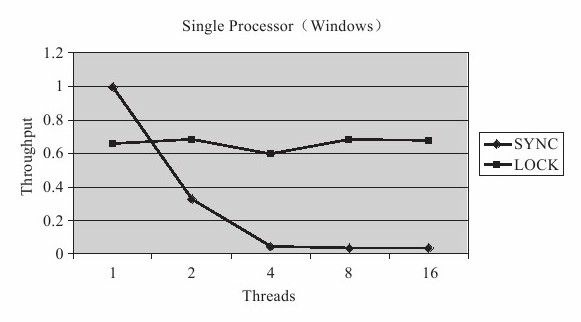
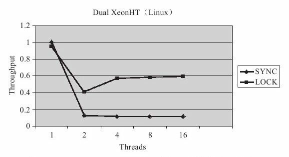
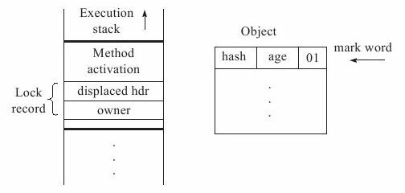
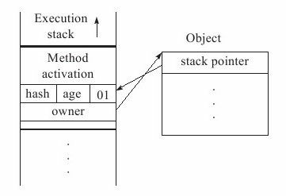
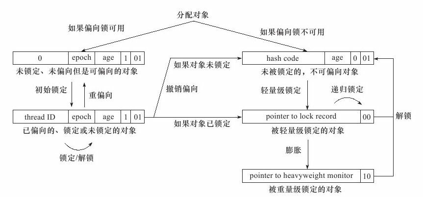

线程安全
Table of Contents
在软件业发展的初期，程序编写都是以算法为核心的，程序员会把数据和过程分别作为独立的部分来考虑： 数据代表问题空间中的客体，程序代码则用于处理这些数据 这种思维方式直接站在计算机的角度去抽象问题和解决问题，称为面向过程的编程思想 与此相对的是，面向对象的编程思想是站在现实世界的角度去抽象和解决问题，它把数据和行为都看做是对象的一部分 这样可以让程序员能以符合现实世界的思维方式来编写和组织程序
面向过程的编程思想极大地提升了现代软件开发的生产效率和软件可以达到的规模，但是现实世界与计算机世界之间不可避免地存在一些差异。例如，人们很难想象现实中的对象在一项工作进行期间，会被不停地中断和切换，对象的属性（数据）可能会在中断期间被修改和变 脏 ，而这些事件在计算机世界中则是很正常的事情。有时候，良好的设计原则不得不向现实做出一些让步，必须让程序在计算机中正确无误地运行，然后再考虑如何将代码组织得更好，让程序运行得更快。对于这部分的主题 高效并发 来讲，首先需要保证并发的正确性，然后在此基础上实现高效。先从如何 保证并发的正确性 和如何 实现线程安全 讲起
线程安全
线程安全 这个名称，相信稍有经验的程序员都会听说过，甚至在代码编写和走查的时候可能还会经常挂在嘴边，但是如何找到一个不太拗口的概念来定义线程安全却不是一件容易的事情
在Google中搜索它的概念，找到的是类似于 ：如果一个对象可以安全地被多个线程同时使用，那它就是线程安全的
这样的定义并不能说它不正确，但是人们无法从中获取到任何有用的信息
《Java Concurrency In Practice》的作者Brian Goetz对 线程安全 有一个比较恰当的定义： 当 多个线程 访问 一个对象时，如果不用考虑这些线程在运行时环境下的 调度和交替执行 ，也不需要进行 额外的同步 ，或者在 调用方进行任何其他的协调操作 ， 调用这个对象的行为 都可以 获得正确的结果 ，那这个对象是线程安全的
这个定义比较严谨，它要求线程安全的代码都必须具备一个特征：代码本身 封装了所有必要的正确性保障手段 （如 互斥同步 等），令 调用者无须关心多线程 的问题，更 无须自己采取任何措施 来保证多线程的正确调用
这点听起来简单，但其实并不容易做到
在大多数场景中，我们都会将这个定义弱化一些，如果把“调用这个对象的行为”限定为“单次调用”
这个定义的其他描述也能够成立的话，就可以称它是线程安全了
Java语言中的线程安全
那接下来就讨论一下在Java语言中，线程安全具体是如何体现的？有哪些操作是线程安全的？
这里讨论的线程安全，就限定于多个线程之间存在共享数据访问这个前提
因为如果一段代码根本不会与其他线程共享数据，那么从线程安全的角度来看，程序是串行执行还是多线程执行对它来说是完全没有区别的
为了更加深入地理解线程安全，在这里可以不把线程安全当做一个 非真即假的二元排他 选项来看待，按照线程安全的 安全程度 由 强至弱 来排序，可以将Java语言中各种操作共享的数据分为以下5类：
- 不可变
- 绝对线程安全
- 相对线程安全
- 线程兼容
- 线程对立
不可变
在Java语言中（特指JDK 1.5以后，即Java内存模型被修正之后的Java语言）， 不可变 ( Immutable )的对象一定是 线程安全 的，无论是对象的方法实现还是方法的调用者，都不需要再采取任何的线程安全保障措施， 只要一个不可变的对象被正确地构建出来 （没有发生 this引用逃逸 的情况），那其外部的 可见状态 永远也不会改变，永远也不会看到它在多个线程之中处于不一致的状态
“不可变”带来的安全性是最简单和最纯粹的
Java语言中，如果共享数据：
- 基本数据类型 ：只要在定义时使用 final 关键字修饰它就可以保证它是不可变的
- 对象 ：需要保证 对象的行为不会对其状态产生任何影响 才行
- java.lang.String类的对象，它是一个典型的不可变对象，调用它的 substring() 、 replace() 和 concat() 这些方法都不会影响它原来的值，只会 返回一个新构造 的字符串对象
保证对象行为不影响自己状态的途径有很多种，其中最简单的就是把对象中 带有状态的变量都声明为final ，这样在构造函数结束之后，它就是不可变的，例如代码中中java.lang.Integer构造函数所示的，它通过将内部状态变量 value 定义为 final 来保障状态不变：
/** *The value of the＜code＞Integer＜/code＞. *@serial */ private final int value; /** *Constructs a newly allocated＜code＞Integer＜/code＞object that *represents the specified＜code＞int＜/code＞value. * *@param value the value to be represented by the *＜code＞Integer＜/code＞object. */ public Integer(int value) { this.value=value; }
在Java API中符合不可变要求的类型，除了上面提到的String之外，常用的还有 枚举类型
以及java.lang.Number的部分子类，如 Long 和 Double 等数值包装类型，BigInteger 和 BigDecimal 等大数据类型
但同为Number的子类型的原子类 AtomicInteger 和 AtomicLong 则并非不可变的
绝对线程安全
绝对的线程安全完全满足Brian Goetz给出的线程安全的定义，这个定义其实是很严格的，一个类要达到“不管运行时环境如何，调用者都不需要任何额外的同步措施”通常需要付出很大的，甚至有时候是不切实际的代价
在Java API中标注自己是线程安全的类，大多数都不是绝对的线程安全
可以通过Java API中一个不是“绝对线程安全”的线程安全类来看看这里的“绝对”是什么意思
如果说 java.util.Vector 是一个线程安全的容器，相信所有的Java程序员对此都不会有异议，因为它的 add() 、 get() 和 size() 这类方法都是被 synchronized 修饰的，尽管这样效率很低，但确实是安全的。但是，即使它所有的方法都被修饰成同步，也不意味着 调用它的时候永远都不再需要同步 手段了，请看一下中的测试代码：
private static Vector<Integer> vector = new Vector<Integer>(); public static void main(String[] args) { while (true) { for (int i = 0; i < 10; i++) { vector.add(i); } Thread removeThread = new Thread(new Runnable() { @Override public void run() { for (int i = 0; i < vector.size(); i++) { vector.remove(i); } } }); Thread printThread = new Thread(new Runnable() { @Override public void run() { for (int i = 0; i < vector.size(); i++) { System.out.println((vector.get(i))); } } }); removeThread.start(); printThread.start(); //不要同时产生过多的线程，否则会导致操作系统假死 while (Thread.activeCount() > 20); } }
Exception in thread"Thread-132"java.lang.ArrayIndexOutOfBoundsException： Array index out of range：17 at java.util.Vector.remove（Vector.java：777） at org.klose.mulithread.VectorTest$1.run（VectorTest.java：21） at java.lang.Thread.run（Thread.java：662）
很明显，尽管这里使用到的 Vector 的 get() 、 remove() 和 size() 方法都是 同步 的，但是在多线程的环境中，如果不在 方法调用端做额外的同步措施 的话，使用这段代码仍然是不安全的，因为如果另一个线程恰好在错误的时间里删除了一个元素，导致序号 i 已经不再可用的话，再用 i 访问数组就会抛出一个 ArrayIndexOutOfBoundsException 。如果要保证这段代码能正确执行下去，不得不把 removeThread 和 printThread 的定义改成：
Thread removeThread = new Thread(new Runnable() { @Override public void run() { synchronized (vector) { for (int i = 0; i < vector.size(); i++) { vector.remove(i); } } } }); Thread printThread = new Thread(new Runnable() { @Override public void run() { synchronized (vector) { for (int i = 0; i < vector.size(); i++) { System.out.println((vector.get(i))); } } } });
相对线程安全
相对的线程安全 就是通常意义上所讲的线程安全，它需要保证对这个对象单独的操作是线程安全的，在调用的时候不需要做额外的保障措施，但是对于一些 特定顺序的连续调用 ，就可能 需要在调用端 使用 额外的同步手段 来保证调用的正确性。上面代码就是相对线程安全的明显的案例
在Java语言中，大部分的线程安全类都属于这种类型
例如 Vector、HashTable、Collections的synchronizedCollection()方法包装的集合等
线程兼容
线程兼容 是指 对象本身并不是线程安全的 ，但是可以 通过在 调用端 正确地使用 同步 手段 来 保证对象在并发环境中可以安全地使用 ，平常说一个类不是线程安全的，绝大多数时候指的是这一种情况
Java API中大部分的类都是属于线程兼容的 如与前面的Vector和HashTable相对应的集合类ArrayList和HashMap等
线程对立
线程对立 是指 无论调用端是否采取了同步措施，都无法在多线程环境中并发使用 的代码。由于Java语言天生就具备多线程特性，线程对立这种 排斥多线程 的代码是很少出现的，而且通常都是 有害的 ，应当 尽量避免
一个线程对立的例子是 Thread 类的 suspend() 和 resume() 方法，如果有 两个线程 同时持有 一个线程对象 ，一个 尝试去中断 线程，另一个 尝试去恢复 线程，而且并发进行的话，无论调用时 是否进行了同步 ，目标线程都是 存在死锁 风险的：如果 suspend() 中断的线程就是即将要执行 resume() 的那个线程，那就肯定要产生死锁了
也正是由于这个原因，suspend() 和 resume() 方法已经被 JDK 声明废弃(@Deprecated)了
常见的线程对立的操作还有 System.setIn() 、Sytem.setOut() 和 System.runFinalizersOnExit() 等
实现方法
应该如何实现线程安全，这听起来似乎是一件由代码如何编写来决定的事情，确实，如何实现线程安全与代码编写有很大的关系，但虚拟机提供的 同步 和 锁机制 也起到了非常重要的作用
代码编写如何实现线程安全和虚拟机如何实现同步与锁这两者都会有所涉及，相对而言更偏重后者一些
只要了解了虚拟机线程安全手段的运作过程，自己去思考代码如何编写会变得更加容易
互斥同步
互斥同步 是常见的一种并发正确性保障手段：
- 同步 ：在多个线程 并发 访问 共享数据 时，保证共享数据在 同一个时刻 只被 一个 （或者是 一些 ，使用信号量的时候）线程使用
- 互斥 ：是实现同步的一种 手段 ，下面是主要的互斥实现方式：
- 临界区
- 互斥量
- 信号量
因此，在这4个字里面：
互斥是 因 ，同步是 果
互斥是 方法 ，同步是 目的
synchronized
在Java中，最基本的互斥同步手段就是 synchronized 关键字，synchronized关键字经过编译之后，会在同步块的前后分别形成 monitorenter 和 monitorexit 这两个 字节码指令 ，这两个字节码都需要一个 reference 类型的参数来 指明 要 锁定 和 解锁 的 对象 ：
- 如果Java程序中的 synchronized 明确指定 了 对象参数 ，那就是这个 对象的reference
- 如果 没有明确指定 ，那就根据 synchronized 修饰的是 实例方法 还是 类方法 ，去取对应的 对象实例 或 Class对象 来作为锁对象
有两点是需要特别注意的： 1. synchronized 同步块对 同一条线程 来说是 可重入 的，不会出现自己把自己锁死的问题 2. 同步块在已进入的线程执行完之前，会 阻塞后面 其他线程 的进入
根据虚拟机规范的要求：
- 在执行 monitorenter 指令时： 尝试获取对象的锁
- 如果这个对象 没被锁定 ，或者 当前线程 已经拥有了 那个对象的锁 ，把 锁的计数器加1
- 在执行 monitorexit 指令时：会将 锁计数器减1 ，当计数器为 0 时，锁就被 释放
- 如果 获取对象锁失败 ，那当前线程就要 阻塞等待 ，直到对象 锁被 另外一个 线程 释放 为止
Java的线程 是映射到 操作系统的原生线程 之上的 如果要阻塞或唤醒一个线程，都需要 操作系统 来帮忙完成 这就需要从用户态转换到核心态中，因此状态转换需要耗费很多的处理器时间 对于代码简单的同步块（如被synchronized修饰的 getter() 或 setter() 方法），状态转换消耗的时间有可能比用户代码执行的时间还要长 所以synchronized是Java语言中一个重量级的操作，有经验的程序员都会在确实必要的情况下才使用这种操作 而虚拟机本身也会进行一些优化，譬如在通知操作系统阻塞线程之前加入一段自旋等待过程，避免频繁地切入到核心态之中
ReentrantLock
还可以使用 java.util.concurrent 包中的 重入锁 ( ReentrantLock )来实现同步
在基本用法上，ReentrantLock 与 synchronized 很相似，他们都具备一样的 线程重入 特性，只是 代码写法 上有点区别： ReentrantLock：表现为 API层面 的互斥锁 lock() 和 unlock() 方法配合 try/finally 语句块来完成 synchronzed： 原生语法 层面的互斥锁
同时 ReentrantLock增加了一些 高级 功能，主要有以下3项：
- 等待可中断 ：当持有锁的线程 长期不释放锁 的时候， 正在等待的线程 可以选择 放弃等待 ，改为处理其他事情，可中断特性对 处理执行时间非常长的同步块 很有帮助
- 实现 公平锁 ：指多个线程在等待同一个锁时，必须 按照 申请锁的时间顺序 来 依次 获得锁 ；而非公平锁则不保证这一点，在锁被释放时， 任何一个等待锁的线程 都有机会获得锁
- synchronized 中的锁是 非公平的
- ReentrantLock 默认 情况下也是 非公平的 ，但可以通过 带布尔值的构造函数 要求 使用公平锁
- 锁可以 绑定多个条件 ：一个 ReentrantLock 对象 可以 同时绑定多个 Condition 对象
- synchronized中：锁对象的 wait() 和 notify() 或 notifyAll() 方法可以 实现一个隐含的条件 ，如果要和 多于一个的条件 关联的时候，就不得不 额外地添加一个锁
- ReentrantLock则无须这样做，只需要 多次调用 newCondition() 方法 即可
如果需要使用上述功能，选用ReentrantLock是一个很好的选择
性能比较
关于 synchronized 和 ReentrantLock 的 性能 问题，Brian Goetz对这两种锁在 JDK 1.5 与 单核 处理器，以及JDK 1.5与 双Xeon 处理器环境下做了一组吞吐量对比的实验，实验结果如图所示：


从图中看出，多线程环境下 synchronized 的吞吐量 下降得非常严重 ，而 ReentrantLock 则能基本 保持在同一个比较稳定 的水平上
与其说 ReentrantLock 性能好，还不如说 synchronized 还有非常大的优化余地 后续的技术发展也证明了这一点，JDK 1.6中加入了很多针对锁的优化措施 JDK 1.6发布之后，人们就发现 synchronized 与 ReentrantLock 的性能基本上是完全持平了 因此，如果读者的程序是使用JDK 1.6或以上部署的话，性能因素就不再是选择ReentrantLock的理由了 虚拟机在未来的性能改进中肯定也会更加偏向于原生的synchronized 所以还是提倡在 synchronized 能实现需求的情况下，优先考虑使用 synchronized 来进行同步
非阻塞同步
互斥同步最主要的问题就是进行线程阻塞和唤醒所带来的性能问题，因此这种同步也称为 阻塞同步 。从处理问题的方式上说，互斥同步属于一种 悲观的并发 策略，总是认为只要不去做正确的同步措施（例如加锁），那就肯定会出现问题，无论共享数据是否真的会出现竞争，它都要进行 加锁 （这里讨论的是概念模型，实际上虚拟机会优化掉很大一部分不必要的加锁）、 用户态核心态转换 、 维护锁计数器 和 检查是否有被阻塞的线程需要唤醒 等操作。随着硬件指令集的发展，有了另外一个选择： 基于 冲突检测 的 乐观并发 策略，就是先进行操作：
- 如果 没有其他线程争用共享数据 ，那操作就成功了
- 如果 共享数据有争用 ，产生了冲突，那就再 采取其他的补偿措施
- 最常见的补偿措施就是 不断地重试 ，直到成功为止
这种乐观的并发策略的许多实现都不需要把线程挂起，因此这种同步操作称为 非阻塞同步
为什么说使用乐观并发策略需要“硬件指令集的发展”才能进行呢？
因为需要操作和冲突检测这两个步骤具备原子性，靠什么来保证呢？
如果这里再使用互斥同步来保证就失去意义了，所以只能靠硬件来完成这件事情
硬件保证一个从语义上 看起来需要多次操作的行为 只通过 一条处理器指令 就能完成，这类指令常用的有：
- Test-and-Set : 测试并设置
- Fetch-and-Increment : 获取并增加
- Swap : 交换
- Compare-and-Swap : 比较并交换，简称 CAS
- Load-Linked/Store-Conditional : 加载链接/条件存储，下文称 LL/SC
前面的 3条 是 20世纪就已经存在于大多数指令集之中的处理器指令
后面的两条是现代处理器新增的，而且这两条指令的目的和功能是类似的
在 IA64、 x86 指令集中有 cmpxchg 指令完成CAS功能
在 sparc-TSO 也有 casa 指令实现
而在 ARM 和 PowerPC 架构下，则需要使用一对 ldrex/strex 指令来完成LL/SC的功能
CAS 指令
CAS指令 需要有3个 操作数 ：
- 内存位置 ：在 Java 中可以简单理解为 变量的内存地址 ，用 V 表示
- 旧的预期值 : 用 A 表示
- 新值 : 用 B 表示
CAS指令执行时， 当且仅当 ：
- V 符合 旧预期值 A 时，处理器用新值 B 更新 V 的值
- 否则它就 不执行更新
- 但是无论是否更新了 V 的值，都会 返回 V 的旧值
- 上述的处理过程是一个 原子 操作
在JDK 1.5之后，Java程序中才可以使用CAS操作
该操作由 sun.misc.Unsafe类 里面的 compareAndSwapInt() 和 compareAndSwapLong() 等几个方法包装提供
虚拟机在内部对这些方法做了特殊处理，即时编译出来的结果就是一条平台相关的处理器CAS指令
没有方法调用的过程，或者可以认为是 无条件内联 进去了
由于 Unsafe 类不是 提供给用户程序调用的类
Unsafe.getUnsafe() 的代码中限制了只有启动类加载器 Bootstrap ClassLoader 加载的Class才能访问它
因此，如果不采用反射手段，只能通过 其他的 Java API 来 间接使用 它，如J.U.C包里面的 整数原子类 ，其中的 compareAndSet() 和 getAndIncrement() 等方法都使用了 Unsafe类的CAS操作
曾经通过这段 20个线程 自增 10000次 的代码来证明 volatile 变量不具备原子性，那么如何才能让它具备原子性呢？把 race++ 操作或 increase() 方法 用同步块 包裹起来当然是一个办法，但是如果改成如下面代码，那 效率将会提高许多 ：
/** * Atomic变量自增运算测试 * * @author zzm */ public class AtomicTest { public static AtomicInteger race = new AtomicInteger(0); public static void increase() { race.incrementAndGet(); } private static final int THREADS_COUNT = 20; public static void main(String[] args) throws Exception { Thread[] threads = new Thread[THREADS_COUNT]; for (int i = 0; i < THREADS_COUNT; i++) { threads[i] = new Thread(new Runnable() { @Override public void run() { for (int i = 0; i < 10000; i++) { increase(); } } }); threads[i].start(); } while (Thread.activeCount() > 1) Thread.yield(); System.out.println(race); } }
200000
使用 AtomicInteger 代替 int 后，程序输出了正确的结果，一切都要归功于 incrementAndGet() 方法的 原子性 。它的实现其实非常简单，如下所示：
/** * Atomically increment by one the current value. * @return the updated value */ public final int incrementAndGet() { for (;;) { int current = get(); int next = current + 1; if (compareAndSet(current, next)) return next; } }
incrementAndGet() 方法在一个无限循环中，不断尝试将一个 比当前值大1的新值 赋给自己 ：
- 如果失败了，那说明在执行 获取-设置 操作的时候 值已经有了修改 ，于是 再次循环 进行下一次操作，直到 设置成功 为止
尽管CAS看起来很美，但显然这种操作无法涵盖互斥同步的所有使用场景 并且CAS从语义上来说并不是完美的，存在这样的一个逻辑漏洞： 如果一个变量 V 初次读取的时候是 A 值，并且在准备赋值的时候检查到它仍然为 A 值，那我们就能说它的值没有被其他线程改变过了吗？ 如果在这段期间它的值曾经被改成了B，后来又被改回为A，那CAS操作就会误认为它从来没有被改变过 这个漏洞称为CAS操作的“ABA”问题 J.U.C包为了解决这个问题，提供了一个带有标记的原子引用类“AtomicStampedReference” 它可以通过控制变量值的版本来保证CAS的正确性 不过目前来说这个类比较“鸡肋”，大部分情况下ABA问题不会影响程序并发的正确性 如果需要解决ABA问题，改用传统的互斥同步可能会比原子类更高效
无同步方案
要保证线程安全，并不是一定就要进行同步，两者没有因果关系
同步只是保证共享数据争用时的正确性的手段，如果一个方法本来就不涉及共享数据，那它自然就无须任何同步措施去保证正确性
因此会有一些代码天生就是线程安全的，简单地介绍其中的两类
- 可重入代码
- 线程本地存储
可重入代码
这种代码也叫做 纯代码 ，可以在代码执行的任何时刻中断它，转而去执行另外一段代码（包括递归调用它本身），而在控制权返回后，原来的程序不会出现任何错误
相对线程安全来说，可重入性是更基本的特性，它可以保证线程安全
即所有的可重入的代码都是线程安全的，但是并非所有的线程安全的代码都是可重入的
可重入代码有一些共同的特征：
- 不依赖 存储在堆上的数据 和 公用的系统资源
- 用到的 状态量都由参数中 传入
- 不调用非可重入的方法 等
可以通过一个简单的原则来判断代码是否具备可重入性： 如果一个方法，它的 返回结果是可以预测的 ，只要输入了相同的数据，就都能返回相同的结果，那它就满足可重入性的要求，当然也就是线程安全的
实际上函数式编程，产生的就是可重入的代码
线程本地存储
如果一段代码中所需要的数据必须与其他代码共享，那就看看 这些 共享数据的代码 是否能 保证在同一个线程 中执行 ？如果能保证，就可以把 共享数据的可见范围 限制 在 同一个线程 之内，这样，无须同步也能保证线程之间不出现数据争用的问题
符合这种特点的应用并不少见，大部分 使用消费队列 的架构模式（如 生产者-消费者 模式）都会将 产品的消费过程尽量在一个线程中消费 完，其中最重要的一个应用实例就是经典Web交互模型中的 一个请求对应一个服务器线程 的处理方式，这种处理方式的广泛应用使得很多Web服务端应用都可以使用 线程本地存储 来解决线程安全问题
Java语言中，如果一个变量要被多线程访问，可以使用volatile关键字声明它为“易变的” 如果一个变量要被某个线程独享，Java中就没有类似C++中__declspec 这样的关键字 不过还是可以通过 java.lang.ThreadLocal 类来实现线程本地存储的功能 每一个线程的Thread 对象中都有一个 ThreadLocalMap 对象 这个对象存储了一组以 ThreadLocal.threadLocalHashCode 为键，以本地线程变量为值的 K-V 值对 ThreadLocal对象就是当前线程的 ThreadLocalMap 的访问入口 每一个ThreadLocal对象都包含了一个独一无二的 ThreadLocalHashCode值，使用这个值就可以在线程 K-V值对中找回对应的本地线程变量
锁优化
高效并发是从 JDK 1.5 到 JDK 1.6 的一个重要改进，HotSpot虚拟机开发团队在这个版本上花费了大量的精力去实现各种锁优化技术：
- 适应性自旋
- 锁消除
- 锁粗化
- 轻量级锁
- 偏向锁
这些技术都是为了在线程之间更高效地共享数据，以及解决竞争问题，从而提高程序的执行效率
自旋锁
前面讨论互斥同步的时候，提到了互斥同步对性能最大的影响是阻塞的实现
挂起线程和恢复线程的操作都需要转入内核态中完成，这些操作给系统的并发性能带来了很大的压力
虚拟机的开发团队也注意到在许多应用上， 共享数据的锁定状态只会持续很短的一段时间 ，为了这段时间去挂起和恢复线程并不值得。如果物理机器有一个以上的处理器，能让两个或以上的线程同时并行执行，可以让 后面请求锁 的那个线程 稍等一下 ，但 不放弃处理器的执行时间 ，看看持有锁的线程是否很快就会释放锁。为了让线程等待，只需让线程 执行一个忙循环 （自旋），这项技术就是所谓的 自旋锁
自旋锁在 JDK 1.4.2 中就已经引入，只不过默认是关闭的，可以使用 -XX:+UseSpinning 参数来开启，在 JDK 1.6 中就已经改为 默认开启 了。 自旋等待不能代替阻塞 ，且先不说对处理器数量的要求，自旋等待本身虽然避免了线程切换的开销，但它是要 占用处理器时间 的：
- 如果锁被占用的时间很短，自旋等待的效果就会非常好
- 如果锁被占用的时间很长，那么自旋的线程只会白白消耗处理器资源，而不会做任何有用的工作，反而会带来性能上的浪费
因此，自旋等待的时间必须要有一定的限度，如果 自旋超过了限定的次数仍然没有成功获得锁 ，就应当使用传统的方式去 挂起线程 了。自旋次数的默认值是 10 次，用户可以使用参数 -XX:PreBlockSpin 来更改
在JDK 1.6中引入了自适应的自旋锁。自适应意味着自旋的时间不再固定了，而是由前一次在同一个锁上的自旋时间及锁的拥有者的状态来决定
如果在同一个锁对象上，自旋等待刚刚成功获得过锁，并且持有锁的线程正在运行中
那么虚拟机就会认为这次自旋也很有可能再次成功，进而它将允许自旋等待持续相对更长的时间，比如100个循环
另外，如果对于某个锁，自旋很少成功获得过，那在以后要获取这个锁时将可能省略掉自旋过程，以避免浪费处理器资源
有了自适应自旋，随着程序运行和性能监控信息的不断完善，虚拟机对程序锁的状况预测就会越来越准确，虚拟机就会变得越来越“聪明”了。
锁消除
锁消除 是指虚拟机 即时编译器 在运行时，对一些代码上要求同步，但是被检测到 不可能存在共享数据竞争的锁进行消除 。锁消除的主要判定依据来源于 逃逸分析 的数据支持，如果判断在一段代码中，堆上的所有 数据都不会逃逸出去 从而被其他线程访问到，那就可以把它们当做栈上数据对待，认为它们是线程私有的，同步加锁自然就无须进行
变量是否逃逸，对于虚拟机来说需要使用数据流分析来确定
但是程序员自己应该是很清楚的，怎么会在明知道不存在数据争用的情况下要求同步呢？
答案是有许多同步措施并不是程序员自己加入的，同步的代码在Java程序中的普遍程度也许超过了大部分人的想象
来看看下面代码中的例子，这段非常简单的代码仅仅是输出3个字符串相加的结果，无论是源码字面上还是程序语义上都没有同步：
public String concatString(String s1,String s2,String s3){ return s1+s2+s3; }
由于 String 是一个 不可变 的类，对字符串的连接操作总是通过生成新的 String 对象来进行的，因此 Javac编译器 会对 String连接 做 自动优化 。在JDK 1.5之前，会转化为 StringBuffer 对象的连续 append() 操作，可能会变成下面的样子：
public String concatString(String s1, String s2, String s3){ StringBuffer sb = new StringBuffer(); sb.append(s1); sb.append(s2); sb.append(s3); return sb.toString(); }
每个 StringBuffer.append() 方法中都有一个 同步块 ，锁就是 sb 对象。虚拟机观察变量 sb，很快就会发现它的 动态作用域被限制在 concatString() 方法内部 。也就是说， sb的所有引用永远不会 逃逸 到 concatString() 方法之外 ，其他线程无法访问到它，因此，虽然这里有锁，但是可以被 安全地消除掉 ，在即时编译之后，这段代码就会 忽略掉所有的同步 而直接执行了
客观地说，既然谈到锁消除与逃逸分析，那虚拟机就不可能是JDK 1.5之前的版本
上面的例子在JDK 1.5及以后的版本中，会转化为 StringBuilder 对象的连续 append() 操作
非线程安全的StringBuilder来完成字符串拼接，并不会加锁
但这也不影响用这个例子证明Java对象中同步的普遍性
锁粗化
原则上，在编写代码的时候，总是推荐将同步块的作用范围限制得尽量小：只在共享数据的实际作用域中才进行同步
这样是为了使得需要同步的操作数量尽可能变小，如果存在锁竞争，那等待锁的线程也能尽快拿到锁
大部分情况下，上面的原则都是正确的，但是如果一系列的连续操作都对 同一个对象反复加锁和解锁 ，甚至 加锁操作是出现在循环体 中的，那即使没有线程竞争， 频繁地进行互斥同步操作 也会导致 不必要的性能损耗
上面代码中 连续的append() 方法就属于这类情况
如果虚拟机探测到有这样一串零碎的操作都对同一个对象加锁，将会把 加锁同步的范围扩展（粗化）到整个操作序列的外部
就是扩展到 第一个 append() 操作之前直至最后一个 append() 操作之后 ，这样只需要 加锁一次 就可以了
轻量级锁
轻量级锁 是 JDK 1.6 之中加入的新型锁机制，它名字中的 轻量级 是相对于使用 操作系统互斥量 来实现的传统锁而言的，因此传统的锁机制就称为 重量级 锁。首先需要强调一点的是，轻量级锁并不是用来代替重量级锁的，它的本意是在 没有多线程竞争 的前提下， 减少传统的重量级锁 使用操作系统互斥量 产生的性能消耗
要理解轻量级锁，以及后面会讲到的偏向锁的原理和运作过程，必须从 HotSpot 虚拟机的 对象（对象头部分）的内存布局 开始介绍。HotSpot虚拟机的 对象头 分为两部分信息：
- 存储 对象自身的运行时数据 ：这部分数据的长度在 32位 和 64位 的虚拟机中分别为 32bit 和 64bit ，官方称它为 Mark Word ，它是 实现 轻量级锁 和 偏向锁 的关键
- 哈希码
- GC分代年龄
- …
- 存储 指向方法区对象类型数据 的指针
- 如果是数组对象的话，还会有一个额外的部分用于 存储数组长度
对象头信息是与 对象自身定义的数据无关 的额外存储成本
考虑到虚拟机的空间效率，Mark Word被设计成一个 非固定的数据结构
以便在 极小的空间内存储尽量多的信息 ，它会根据对象的状态复用自己的存储空间
例如，在 32位的 HotSpot虚拟机 中对象 未被锁定 的状态下，Mark Word的 32bit 空间：
25bit : 存储 对象哈希码
4bit：存储 对象分代年龄
2bit：存储 锁标志位
1bit: 固定为0
在其他状态 轻量级锁定 、 重量级锁定 、 GC标记 、 可偏向 下对象的存储内容见下表：
| 存储内容 | 标志位 | 状态 |
| 对象哈希码、对象分代年龄 | 01 | 未锁定 |
| 指向锁记录的指针 | 00 | 轻量级锁定 |
| 指向重量级锁的指针 | 10 | 膨胀（重量级锁定） |
| 空：不需要记录信息 | 11 | GC 标记 |
| 偏向线程 ID、偏向时间戳、对象分代年龄 | 01 | 可偏向 |
在轻量级锁的执行过程，在代码进入同步块的时候，如果此同步对象 没有被锁定 （锁标志位为 01 状态），虚拟机首先将在 当前线程的栈 中建立一个名为 锁记录 的空间，用于存储 锁对象目前的 Mark Word 的拷贝 ( Displaced Mark Word ) ，这时候线程堆栈与对象头的状态如图所示：

然后，虚拟机将 使用CAS操作 尝试将 对象的Mark Word 更新为 指向Lock Record的指针 ：
- 如果这个更新动作成功了，那么这个 线程就拥有了该对象的锁 ，并且对象Mark Word的 锁标志位 将转变为 00 ，即表示此对象处于 轻量级锁定 状态，这时候线程堆栈与对象头的状态如图所示：

- 如果这个更新操作失败了，虚拟机首先会 检查 对象的 Mark Word 是否 指向当前线程的栈帧 ：
- 指向说明：当前线程已经拥有了这个对象的锁，那就可以 直接进入同步块 继续执行
- 不指向：说明 这个锁对象 已经 被其他线程抢占 了。如果有两条以上的线程争用同一个锁，那轻量级锁就不再有效，要 膨胀为重量级锁 ：
- 锁标志 的状态值变为 10
- Mark Word中存储的就是 指向重量级锁（互斥量）的指针 ，后面 等待锁的线程也要进入 阻塞 状态
上面描述的是轻量级锁的加锁过程，它的 解锁过程 也是 通过CAS操作 来进行的：如果对象的Mark Word仍然指向着 线程的锁记录 ，那就用 CAS操作 把 对象 当前的Mark Word 和线程中 复制的Displaced Mark Word 替换 回来：
- 替换成功，整个同步过程就完成了
- 替换失败，说明有其他线程尝试过获取该锁，那就要在 释放锁的同时，唤醒被挂起的线程
轻量级锁能提升程序同步性能的依据是“对于绝大部分的锁，在整个同步周期内都是不存在竞争的”，这是一个经验数据
如果没有竞争，轻量级锁使用CAS操作避免了使用互斥量的开销
但如果存在锁竞争，除了互斥量的开销外，还额外发生了CAS操作，因此在有竞争的情况下，轻量级锁会比传统的重量级锁更慢
偏向锁
如果说 轻量级锁 是在 无竞争的情况下 使用 CAS操作 去 消除同步使用的互斥量 ，那 偏向锁就是在无竞争的情况下把整个同步都消除掉 ，连CAS操作都不做了。
偏向锁也是JDK 1.6中引入的一项锁优化，它的目的是消除数据在无竞争情况下的同步原语，进一步提高程序的运行性能
偏向锁的“偏”，就是偏心的“偏”、偏袒的“偏”，它的意思是这个锁会偏向于第一个获得它的线程
如果在接下来的执行过程中，该锁没有被其他的线程获取，则持有偏向锁的线程将永远不需要再进行同步
假设当前虚拟机启用了偏向锁( -XX:+UseBiasedLocking ，JDK 1.6的默认值) ，那么，当锁对象第一次被线程获取的时候：
- 虚拟机将会把对象头中的 标志位 设为 01 ，即 偏向模式
- 使用 CAS操作 把获取到这个 锁的线程的ID 记录在 对象的Mark Word 之中
如果CAS操作成功， 持有偏向锁的线程 以后 每次进入这个锁相关的同步块 时，虚拟机都可以 不再进行任何同步操作
例如: Locking 、Unlocking 及对 Mark Word 的 Update 等
当有 另外一个线程 去尝试 获取这个锁 时， 偏向模式就宣告结束 。根据锁对象目前是否 处于被锁定的状态 撤销偏向 :
- 恢复到未锁定：标志位为 01
- 轻量级锁定：标志位为 00
后续的同步操作就如上面介绍的轻量级锁那样执行。偏向锁、轻量级锁的状态转化及对象Mark Word的关系如图所示：

偏向锁可以提高带有同步但无竞争的程序性能
它同样是一个带有效益权衡性质的优化，也就是说，它并不一定总是对程序运行有利
如果程序中大多数的锁总是被多个不同的线程访问，那偏向模式就是多余的
在具体问题具体分析的前提下，有时候使用参数 -XX:-UseBiasedLocking 来 禁止偏向锁优化 反而可以提升性能